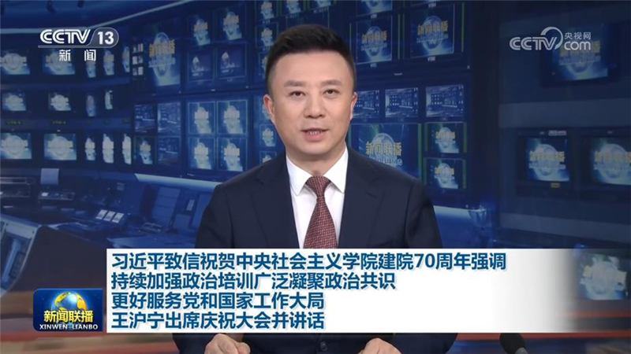
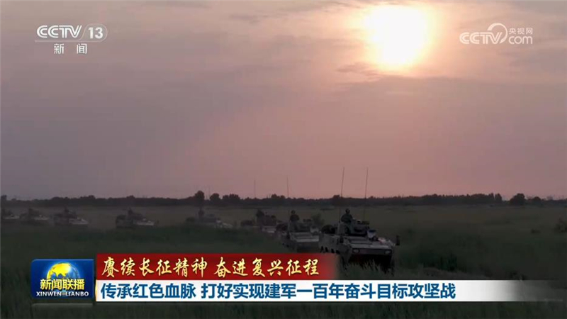
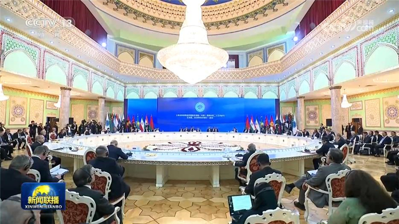
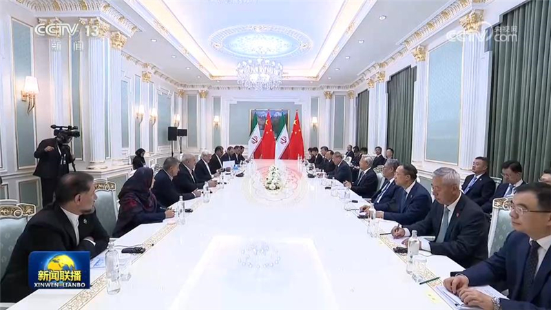
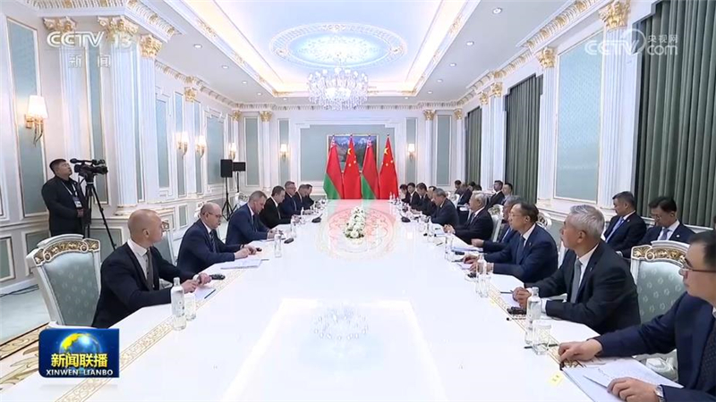
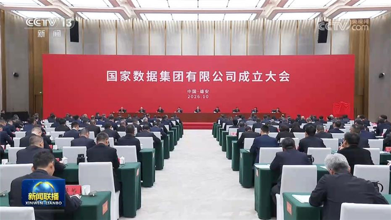
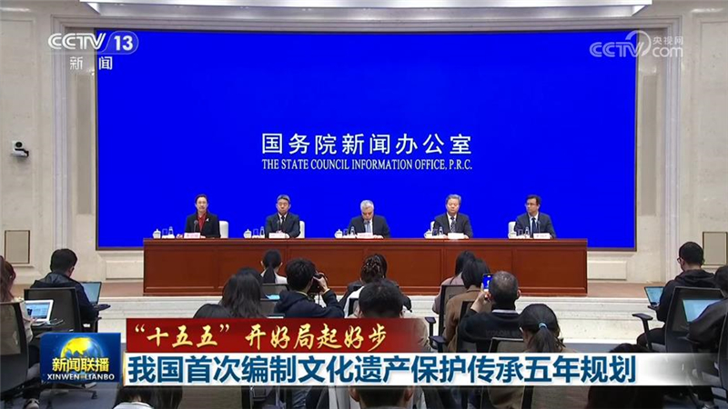
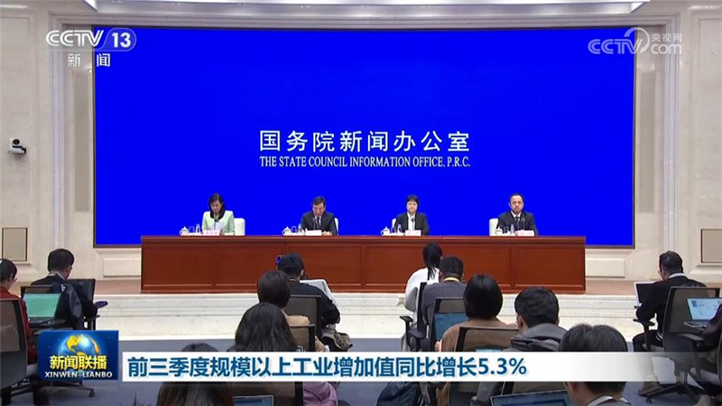
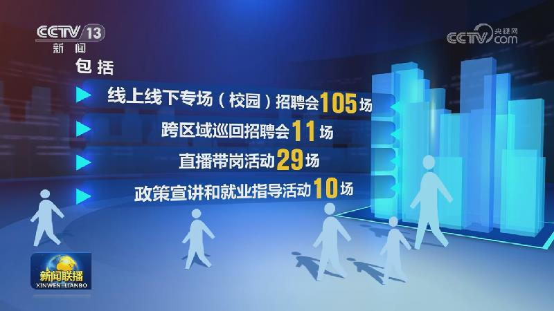
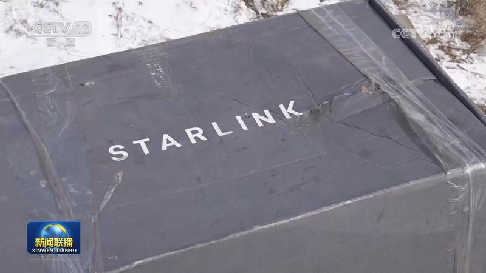

01

习近平致信祝贺中央社会主义学院建院70周年强调 持续加强政治培训广泛凝聚政治共识 更好服务党和国家工作大局 王沪宁出席庆祝大会并讲话
在中央社会主义学院建院70周年之际，中共中央总书记、国家主席、中央军委主席习近平发来贺信表示祝贺。


在中央社会主义学院建院70周年之际，中共中央总书记、国家主席、中央军委主席习近平发来贺信表示祝贺。
本台今天（10月20日）播发央视快评《持续加强政治培训 广泛凝聚政治共识》。

习近平主席深刻指出，“弘扬伟大长征精神，走好今天的长征路，必须建设同我国国际地位相称、同国家安全和发展利益相适应的巩固国防和强大军队，为维护国家安全和世界和平而矢志奋斗”。新时代新征程，人民军队大力弘扬伟大长征精神，践行初心使命，聚力练兵备战，在革命性锻造中浴火重生、换羽新生，全力以赴打好实现建军一百年奋斗目标攻坚战，向着实现党在新时代的强军目标奋勇前进。

各位观众，这里是塔吉克斯坦杜尚别国宾馆，国务院总理李强于当地时间10月20日出席在这里举行的上海合作组织成员国政府首脑（总理）理事会第二十五次会议。

当地时间10月19日下午，国务院总理李强在杜尚别出席上海合作组织成员国政府首脑（总理）理事会第二十五次会议期间会见伊朗第一副总统阿雷夫。

当地时间10月19日下午，国务院总理李强在杜尚别出席上海合作组织成员国政府首脑（总理）理事会第二十五次会议期间会见白俄罗斯总理图尔钦。

国家数据集团有限公司成立大会20日在河北雄安新区举行。中共中央政治局常委、国务院副总理丁薛祥出席并为公司成立揭牌。

国务院新闻办公室今天（10月20日）举行“开局起步‘十五五’”系列主题新闻发布会，中央文化遗产保护委员会办公室等部门有关负责人介绍《文化遗产保护传承“十五五”规划》有关情况。

国务院新闻办公室今天（10月20日）举行新闻发布会，工业和信息化部公布的数据显示，今年前三季度，我国工业经济高质量发展取得积极成效。

第140届广交会首期举办335场新品首发活动

俄外长访问伊朗讨论地区局势等问题